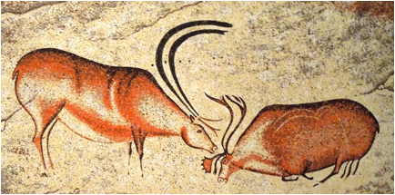

|
 |
|
Workshop on the Origins of Awe and Wonder
Sunday, April 3, from 9:00
am to 2:30 pm (public portion)
|
Invited
speakers: |
Schedule: |
|
Professor Mary Lee Jensvold,
Central Washington University, chimpanzee behavior |
Public
lectures: 9:00 am to 12:30 pm, Chemistry 033 Catered
luncheon with open discussion: 12:30 pm to 2:30 pm, Georgian Room, IMU Register
here (maximum of 50 people for the catered lunch): http://goo.gl/forms/vg4t52lnVi |
|
Professor Randall White, New York University,
prehistoric art |
|
|
Professor Jesse Prinz,
City University of New York, philosophical perspectives |
Description:
Wonder about the natural world is fundamental to
the human condition, and to many intellectual endeavors. The goal of this
workshop is to explore such questions as: Does a sense of wonder exist in other
species? What archeological evidence is there of a sense of wonder in our early
ancestors? What future work might be pursued that could lead to a better
understanding of the role of wonder in the cognitive evolution of humans and
other animals?
Detailed
Schedule:
Morning
talks, Chemistry room 033 (open to the public)
8:00 – 9:00 am: Coffee, tea, bagels etc.
9:00 - 9:30 am: Prof. Tom Schoenemann (Indiana University) - Welcome and
introduction
9:30 - 10:30 am: Prof. Mary Lee Jensvold
(Central Washington University) – “Signs of Art and Pretend Play in
Chimpanzees”
10:30 - 11:30 am: Prof. Randall White (New York University) – “The invention of sensory illusion:
expressive culture in the European Aurignacian”
11:30 am - 12:30 pm: Prof. Jesse Prinz (City
University of New York and University of North Carolina, Chapel Hill) – “How
Wonder Transformed Homo Sapiens into
Human Beings”
Luncheon
with presentations and open discussion, in the Georgian Room of the Indiana
Memorial Union (open to the public, but limited to the first 50 to RSVP)
12:30 pm – 2:30 pm
Afternoon
roundtable discussion (by invitation)
3:00 pm to 5 pm
Workshop Goals:
The focus of this workshop will be on the
evolutionary origins of the sense of awe and wonder. Wonder about the natural
world is fundamental to the human condition, and to many intellectual
endeavors. From an evolutionary perspective, wonder about the natural world
might have been a crucial component of our species adaptation. It might have
encouraged a desire to explore how the world works in a deeper manner,
potentially leading to increasing technological innovation. Wonder would in
fact seem to be a powerful motivating influence among scientists. The goal of
this workshop is to explore such questions as: Does a sense of wonder exist in
other species? What archeological evidence is there of a sense of wonder in our
early ancestors? What future work might be pursued that could lead to a better
understanding of the role of wonder in the cognitive evolution of humans and
other animals?
The workshop will welcome three distinguished
scholars to Bloomington to interact with members of the IU community interested
the evolution of cognition: Professor Mary Lee Jensvold,
from Central Washington University, has extensive experience with chimpanzee
behavior. Professor Randall White,
from New York University, is specialist in prehistoric art. Professor Jesse Prinz, from City University of New York and the University
of North Carolina, Chapel Hill, is a philosopher who has deep interests in the
origins of wonder.
The workshop will include a morning session of
public presentations by these invited scholars, a subsequent luncheon (also
open to the public) during which a series of short (~10 min) presentations will
be given by interested IU scholars, to be followed by an open discussion
session. Finally, an afternoon roundtable involving the invited scholars and a
core group of IU scholars will assess what conclusions might be made about the
evolutionary origins and development of awe and wonder. If enough unanimity of
agreement emerges from the roundtable discussions, a position paper will be
produced for publication summarizing points of agreement.
This workshop has been made possible by a grant
from Indiana University’s Consortium for the Study of Religion, Ethics and
Society, a consortium sponsored by the Vice President for Research Office. Additional
funding has been provided by the Stone Age Institute.
Distinguished
invited scholars:
Mary Lee Jensvold is Primate Communication
Scientist at Fauna Foundation in Carignan, Quebec,
Canada. She is Senior Lecturer in
the Primate Behavior & Ecology Program and Department of Anthropology and
Museum Studies at Central Washington University in Ellensburg, WA USA. She is
the former director of the Chimpanzee & Human Communication Institute. She
worked with the CHCI family of signing chimpanzees since 1986. In 1985 she
received a B.A. in Psychology from University of Oregon, in 1989 a M.S. in
Experimental Psychology from Central Washington University, and in 1996 a Ph.D.
in Experimental Psychology from University of Nevada-Reno. She specializes in
ethological studies of apes, animal intelligence, communication, language, and
culture. Her studies include conversational behaviors, private signing, phrase
development, chimpanzee to chimpanzee conversation, imaginary play, and artwork
in chimpanzees. Other research includes caregiving practices, zoo visitor
effects, and public education about chimpanzees. She is active in improving
conditions for captive chimpanzees through research and advocacy. She is on the boards of the Animal
Welfare Institute, Fauna Foundation, and Friends of Washoe. She was a Sigma Xi distinguished
lecturer and has numerous publications on chimpanzee communication, behavior,
and care.
Randall White is
Professor of Anthropology in the Center for the Study of Human Origins at New
York University. A leading authority on the arts and cultures of the European
Upper Paleolithic, he currently directs excavations at the Aurignacian
site of Sous-le-Roc in the Dordogne region of France. From 1994 and 2014, he
excavated key art-bearing Aurignacian sites: Abri Castanet, Abri Blanchard and
Abri Cellier. In the course
of that work, White and his team have made major new discoveries and have
increased the sample of Aurignacian decorated blocks
by some 30%. As importantly, that team has provided precise 14C dating for many
works. In parallel, White has contributed to our understanding of Paleolithic
female statuary through his technical, experimental and microscopic analysis of
figurines from France (Brassempouy), Italy (Grimaldi) and the Russian Plain (Kostienki,
Avdeevo, Gagarino).
Whenever possible he retreats to La Valade, his farm
in the Vézère Valley, accompanied by his wife Hélène
and their 8 year-old daughter Léa.
Jesse Prinz is a Distinguished Professor of Philosophy
and Director of Interdisciplinary Science Studies at the City University of New
York, Graduate Center. His research focuses on the perceptual, emotional,
and cultural foundations of human psychology. He is author of over 100
articles and several books: Furnishing the Mind (MIT, 2002), Gut
Reactions (Oxford, 2004), The Emotional Construction of Morals
(Oxford, 2007), Beyond Human Nature (Norton, 2012), and The Conscious
Brain (Oxford, 2012). Two other books are forthcoming The Moral
Self and Works of Wonder: A Theory of Art (both with Oxford).
Indiana
University Organizers:
Tom Schoenemann
(Anthropology, Cognitive Science Program)
Colin Allen (History and
Philosophy of Science, Cognitive Science Program)
Kevin Hunt (Anthropology,
Cognitive Science Program)
Kathy Schick (Stone Age Institute
and Cognitive Science Program)
Nick Toth
(Stone Age Institute and Cognitive Science Program)
Workshop
sponsors:
·
Indiana University’s Consortium for the Study of
Religion, Ethics and Society, a consortium sponsored by the Vice President for
Research Office (http://www.indiana.edu/~csres/home.php)
·
The Stone Age Institute (http://www.stoneageinstitute.org)
Abstracts
of invited speakers:
Prof. Mary Lee Jensvold:
“Signs of Art and Pretend Play in Chimpanzees”
Young chimpanzees who were cross-fostered by humans acquired signs of
American Sign Language and other behaviors typical of Western human children
such as drawing. The chimpanzees labeled many of their drawings. The
chimpanzees’ use of two-way communication provides opportunity to ask questions
about their drawings. Their drawings and paintings show individual differences
in style between chimpanzees. Some
drawings show consistent schema among images with the same title such as cup.
Aspects of aesthetics such balance, respect for boundaries, and threeness are explored in examples of chimpanzee artwork.
The chimpanzees use behaviors and signs in ways that resemble pretend play in
human children. Examples include animation, substitution, attribution of
function, and word play.
Prof. Randall White: “The invention of sensory
illusion: expressive culture in the European Aurignacian”
We have lost track of just
how magical and awe-inspiring
the very first material representations must have seemed.
Identifiable images of real-world subjects required the invention of visual
illusion through complex
technologies with complex rules. Tactile and auditory representations are dependent on
the invention of techniques of surface alteration and
sound control respectively.
Examining in rich detail the expressive culture of the Aurignacian
(43,000 to 28,000 years ago),
the earliest modern human
culture in Western and Central Europe, Randall White will
focus on ornaments, images and sounds.
The wonders of sites like
Abri Blanchard, Abri Castanet, Grotte Chauvet, Hohlenstein-Stadel, Vogelherd and
Hohlefels will hold pride of place in this richly illustrated
and multisensory presentation.
Prof. Jesse Prinz: “How
Wonder Transformed Homo Sapiens into
Human Beings”
Wonder is, arguably, the most
human emotion. It plays a central role in three of our most distinctive
practices: art, religion, and science. These practices appear
surprisingly late in our (pre)history, suggesting that they are not innate
dispositions, but rather contingent developments. If wonder is an impetus
for all three, this raises the possibility that wonder, too, is a latecomer.
This talk explores these issues, offering an analysis of wonder and an
explanation why wonder began to show it’s
transformational impact long after we attained anatomic modernity as a species.
Contact:
For more
information, please contact Tom Schoenemann (toms@indiana.edu)
Image sources:
Font de Gaume:
http://www.ethnotraveler.com/site/wp-content/uploads/2013/09/8288204126_4463e1f7e0_b.jpg
Chimpanzee:
http://static.nautil.us/6521_5b80dc3087306fe93a4dca4faadaf71c.jpg